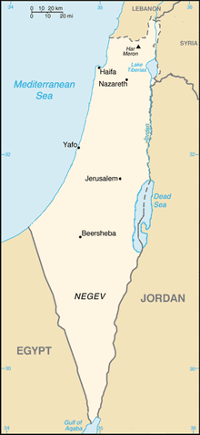

L’État de Palestine est situé au Moyen-Orient dans la région de Palestine (qui correspond au territoire incluant aujourd'hui l'État d'Israël, les territoires palestiniens et une partie du Royaume de Jordanie, du Liban et de la Syrie116).
Gare routière connectant Jérusalem-Est aux principales villes palestiniennes de Cisjordanie. L’État palestinien n'a pas de frontières définies mais revendique les territoires palestiniens et des frontières avec l'État d'Israël, la Jordanie et l'Égypte. Elles forment un des sujets du contentieux guerrier israélo-palestinien117. Après la guerre israélo-arabe de 1948-1949, le territoire constituant le mandat britannique sur la Palestine a été réparti entre Israël, l'Égypte et la Jordanie. Israël et la Jordanie ont annexé les zones sous leur administration, l’Égypte a maintenu une occupation militaire de Gaza118,119,120. Le 27 juillet 1953, le roi Hussein de Jordanie proclame que Jérusalem-Est est la « capitale alternative du Royaume hachémite et fait partie intégrante et inséparable de la Jordanie »121. À la suite de la guerre des Six Jours en 1967, Israël envahit et occupe la Cisjordanie et la bande de Gaza. En juin 1988, Hussein de Jordanie renonce à toute souveraineté sur la Cisjordanie et Jérusalem-Est122,123. Le 15 novembre 1988, le Conseil national palestinien reconnaît l'OLP comme le seul représentant légal du peuple palestinien et proclame « l'indépendance de la Palestine » sur le tracé des accords d'armistice de 1949 entre l'Égypte, la Jordanie et Israël124. Depuis, de nombreux pays ont reconnu l'État de Palestine dont certains dans ces frontières125.
Le climat des zones côtières dans la bande de Gaza peut être très différent de celui des zones montagneuses en Cisjordanie et à Jérusalem, particulièrement pendant les mois d'hiver126. Gaza a un climat chaud, semi-aride ou méditerranéen avec des hivers doux et secs, et des étés chauds. Jérusalem possède un climat méditerranéen et dans une moindre mesure un montagnard127. Il est marqué par une forte chaleur et une forte aridité en été. Seuls, quelques mois en hiver sont humides. La neige peut survenir autour de Jérusalem. Jéricho et la vallée du Jourdain au nord de la Mer Morte ont un climat désertique chaud.